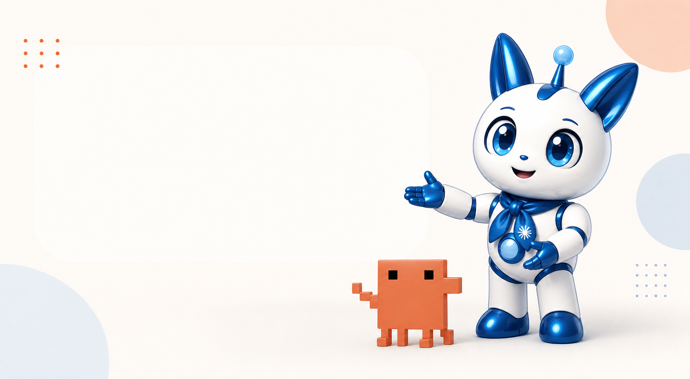

AIを仕事でどう使えばいいかわからない
便利そうだけど、自分の仕事にどう活かすかが見えていない。
Claude Code研修
Claude Codeを使って、AI秘書・LP制作・SNS運用・集客導線まで。仕事に使えるAI社員チームを一緒に構築します。
無理な勧誘はありません。まずは現状整理だけでも大丈夫です。
AI社員ダッシュボード

あなた専用の
AI社員チームを作ろう！
便利そうだけど、自分の仕事にどう活かすかが見えていない。
専門知識やプログラミングが必要なのではと、一歩が踏み出せない。
やることは多いのに、本業に集中する時間が取れない。
人を雇うほどではないけれど、誰かに手伝ってほしい仕事が多い。
仕事を整理し、AIに任せる役割を決め、実務で使い、導線まで整える。順番に進めるので初心者でも始めやすい設計です。
今の仕事を棚卸し、AIに任せられる業務を見つけます。
あなたの事業に合うAI社員の役割を決めます。
日々の業務で使いながら、AI社員を育てます。
集客・販売・サポートの流れに組み込みます。
日々のタスク整理や文章作成を支えるAI秘書を作ります。
LP、LINE、SNSの導線を整え、集客から申込までつなげます。
Claude Codeを実際に使い、AI社員チームを作ります。
初心者でも迷わないよう、業務整理から実装まで伴走します。
7日間で基礎を作る
7日間98,000円
販売導線を整える
30日間298,000円
事業を仕組み化する
60日間498,000円
どのプランが合うか分からない方は、無料相談で一緒に整理します。
講座中の質問やできたことの共有に使える場所をご用意します。
進捗を確認しながら、次にやることを整理します。
分からないことはいつでも相談可能。実務に合わせて回答します。
LPやAI社員ができたら共有し、改善ポイントを確認できます。
仕事の棚卸しと任せる業務を見つける
あなたの価値をサービスに整理する
日々のタスクと文章作成を支えるAI秘書を作る
魅力を伝えるLPの構成と原稿を作る
発信の型を作り、投稿を続けやすくする
LP・LINE・相談まで流れをつなげる
複数のAI社員をチームとして活用する
30日間プランでは商品設計から販売導線まで、60日間プランでは業務改善とAI社員の組織化まで広げます。
一人社長・個人事業主の方
講師・コーチ・カウンセラーの方
セラピスト・士業・専門サービスの方
SNSや発信に時間を取られている方
商品づくりやLP制作に悩んでいる方
AIを仕事に活かして効率化したい方
AI秘書を作ってから、発信や案内文の作成時間が短くなりました。自分の仕事に使える会話の作り方まで分かったのが良かったです。
AIに何を任せるかが明確になり、LPとLINE導線を整えることで、相談の流れがスムーズになりました。
文章が苦手でも、AIと一緒に作れば大丈夫だと思えました。発信の続けられる形が見えました。
大丈夫です。最初に業務整理を行い、必要なところから順番に使える形へ進めます。
必須ではありません。目的はコードを書くことではなく、仕事で使えるAI社員環境を作ることです。
無料相談で現在の状況を確認し、7日・30日・60日のどれが合うかを一緒に整理します。
Support
サポートでは、AI社員導入支援、Claude Code活用、LP・販売導線設計の視点を組み合わせます。ツールの説明だけで終わらせず、あなたの仕事で使える形まで一緒に整えます。